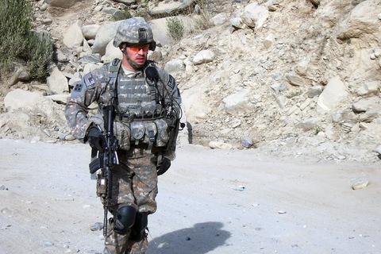

COP Keating

Clint Romesha
Clinton Romesha is a Medal of Honor recipient for leading a counterattack after COP Keating was overrun in 2009 by Taliban forces. He was part of a cavalry unit(Bravo Troop, 3d Squadron, 61st Cavalry Regiment, 4th Brigade Combat Team, 4th Infantry Division) and was part of Red Platoon and leader of Bravo Section(A platoon is 16 men whch is split into 2 sections of 8 men). COP Keating was position at the bottom of a valley which made it a prime target for Taliban forces to shoot straight down into. The Outpost had had several attacks where the taliban gathered intel on how they operated when under fire and where their most important assets were. On October 3, 2009, the Taliban attacked in force with around 300 men. The pinned down the soldiers in the mortar pit so they couldn't get those going. The also fired lots of rounds into the Humvees(Armoured Vehicle thingies with machine guns on top or grenade launchers). The local Afghan Militia abandoned their posts as soon as the fighting happened and made a run for it. Most of them were killed by the Taliban but some went missing and were believed to have gotten away. Eventually, the Taliban breached the wire and got into the base. Clinton Romesha led a counterattack to take the base back from the enemy troops. He got a group of 5 men and got up to some buildings by the front gate and secured the ammunition building, which helped supply fresh ammo, grenades, and other stuff. They eventually were able to get Spectre gunships, F-15s, A-10 Warthogs, and Apache Helocopters. The air support helped take out the enemy in the nearby Afghan town of Urmul where lots of Taliban fighters where shooting down from. Romesha also led his team to save pinned down friendly soldiers, wounded soldiers, and bodies of the dead. They found one guy, Mace, who had been shot up bad and had tons of shrapnel wounds. They got him to the medics who stabilized him but he had lost to much blood and died in the operating room in Bagram.s
Family
He was married to his wife Jessica in 2007. He was in combat during part of his marriage but it didn't weigh down on his wife as much as he didn't have any kids(like chris kyle). Nick Irving had one kid(as far as I know). I could only find this by listening to a Shawn Ryan Show which was as much I could really find about his family also he mentions some of his child life in "The Reaper".
Books
He wrote several books. The Reaper is a great book about his combat deployment in Iraq where he got 33 confirmed kills. In The Reaper he also talks about his life growing up and how he met his one and only wife. He also wrote a book called "The Way of the Reaper" where he talks more broadly about his life and applying the Ranger never quit mindset to life. He also wrote a fictional book series about an Iraq war soldier that is sort of based on his life.